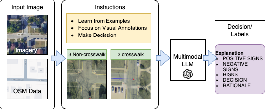

Introduction
Navigating cities remains difficult for wheelchair users due to incomplete or outdated accessibility information. Our work introduces a multimodal AI system that integrates high-resolution geospatial imagery with large language models to classify accessibility features like crosswalks and ramps. These features are then added to OpenStreetMap to support accessible routing algorithms.
Related Work
Prior research explored satellite and aerial imagery for detecting pedestrian infrastructure, YOLO-based models for crosswalk detection, and GIS-based frameworks for accessibility analysis. However, most approaches rely heavily on large labeled datasets, which are time-consuming to obtain and limited in scalability across different regions.
Methods
Overview
We focused on crosswalk detection as a case study. The system employs both zero-shot and few-shot classification using multimodal LLMs, enabling generalization to future tasks such as detecting ramps, stairs, and tactile paving.
Data Collection
High-resolution imagery was obtained from the USGS and paired with OpenStreetMap vector data. Images (5000×5000 pixels) were divided into smaller 256×256 patches to facilitate training and evaluation.
Data Preprocessing
- Plain Dataset: raw satellite imagery
- Overlaid Dataset: OSM road network overlaid on imagery
- Blurred Dataset: Gaussian blur applied to non-essential regions
Prompt Engineering
Prompts were iteratively refined to guide the models. Early prompts used simple descriptions, while later refinements specified intersection locations, stripe patterns, and visual cues. Chain-of-thought prompting improved interpretability and accuracy.
Experimental Evaluation
The system was evaluated across multiple preprocessing techniques. Accuracy reached 99.01% in few-shot settings and 97.5% in zero-shot, outperforming baseline methods like ProtoNet and SimpleShot.

Key Insights
Raw imagery exposed challenges like shadows and ambiguous patterns. Overlaid datasets improved accuracy by integrating spatial and visual data, while blurred datasets provided the best performance by emphasizing crosswalk features and reducing distractions.
Conclusion & Future Work
Our study demonstrates the effectiveness of multimodal AI for accessibility mapping. Future work will expand detection to ramps, tactile paving, and sidewalks across diverse regions. Real-time feedback and fine-tuned multimodal models will enhance system adaptability, supporting inclusive urban navigation.